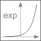

expExponential, base e |

|
Information
This information is part of the Modelica Standard Library maintained by the Modelica Association.
This function returns y = exp(u), with -∞ < u < ∞:

Syntax
y = exp(u)
Inputs (1)
| u |
Type: Real |
|---|
Outputs (1)
| y |
Type: Real |
|---|